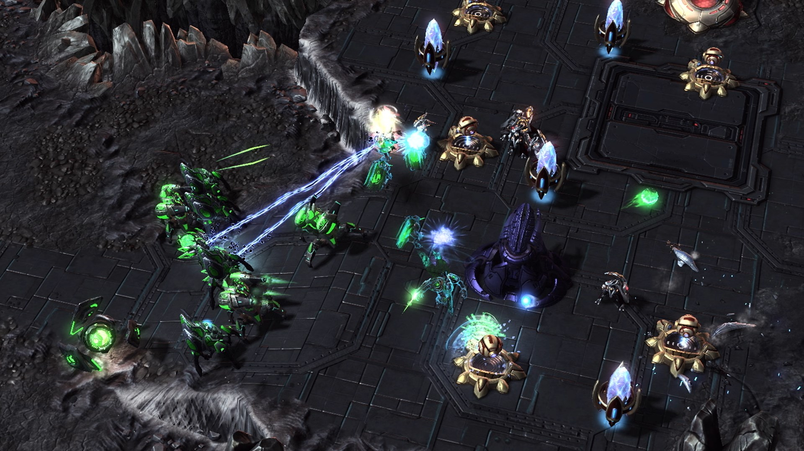

 View Photos: HERE
GitHub Repository: HERE
About
*Note: It is highly recommended that you have a basic understanding of Starcraft II before reading the following description of jBot*
jBot is a bot made for Starcraft II that has beaten Bilzzard's easy, medium, and hard AI. The goal was to create a simple and easy to follow bot that follows a set of predetermined instructions and makes decisions based on the current game state.
How it was Made
jBot was created using DeepMind's Starcraft II Learning Environment (PySC2) and various asynchronous functions. One challenge for me was grasping the concept of asynchronous coroutines and how they differed from multithreading. I found the following analogy helpful in developing my understanding: You are cooking in a resturant. An order comes in for eggs and toast...
- Synchronous: you cook the eggs then you cook the toast.
- Asynchronous, Single Thread: you start the eggs cooking and set a timer. You start the toast cooking, and set a timer. While they are both cooking, you clean the kitchen. When the timers go off, you take the eggs off the stove and toast out of the toaster and serve them.
- Asynchronous, Multi-Threaded: you hire two more cooks, one to cook eggs and one to cook toast. Now you have the problem of coordinating the cooks so that they do not conflict with each other in the kitchen when sharing ingredients and resources.
In the case of jBot, we do not need multiple processes running at the same time, i.e multithreading. It made the most sense to use asynchronous functions running on a single thread. As a result, jBot is able to queue multiple work orders, wait for them to finish, and then perform a certain action with that unit or building.
Decision Making Process
jBot makes decisions based on a hierchy of predetermined parameters. The bot is constantly 'looking' at it's environment to see if any of the aforementioned parameters have been met. For example, the bot is told that it should create another base when the game reaches around 1 minute 30 seconds and it has enough resources. Given this parameter, every game tick, the bot checks if this criteria has been met, if so it performs the action. This is true for every decision that the bot makes throughout the game.
Due to the somewhat linear nature of the bot's decision making process, it is unable to adapt to the opponents stratagies. When writing the attack and defense logic, I decided on a fast rush stratagy. I hoped that this would catch the enemy off-guard with few troops to defend. However, the longer the game progresses, jBot's probability of winning drops drastically.
The Future of jBot
There are many things I hope to implement into jBot in the future. Here is a short list in order of priority:
- Clustering of units to attack in waves instead of one at a time
- Add a late game stratagy as a failsafe
- Improve attack and defense logic
- Improve overall preformance and decision making process